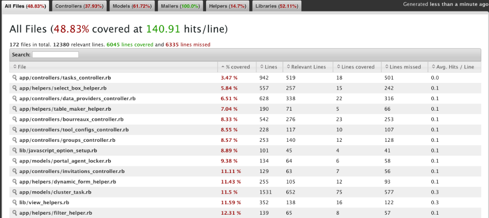
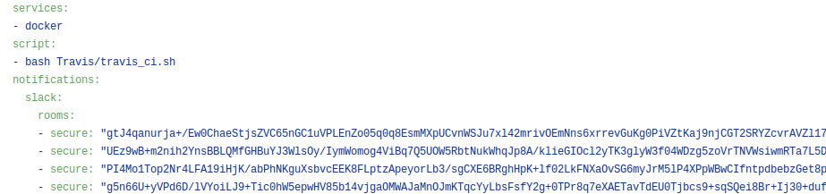
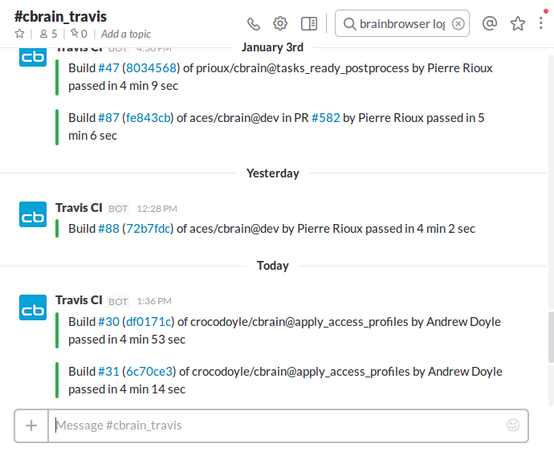

Why?
- Confidence in the code, for us but also for external collaborators
- People are more confident contributing to an open source project with a testing suite
Original setup
Started in 2011, using RSpec, a behavior-driven development (BDD) framework for Ruby

Original setup
- Ruby *
- CBRAIN code *
- Bundle *
- MySQL *
- Schema load or migration (Setup/update the DB)
- Setup the configuration files *
- Install/update CBRAIN plugins
- Run RSpec
Original setup
describe DataProvider do
let(:provider) { create(:data_provider) }
let(:userfile) { mock_model(Userfile, :name => "userfile_double") }
describe "#is_alive?" do
....
end
describe "#cache_prepare" do
it "should raise an exception if not online" do
provider.online = false
expect(lambda{ provider.cache_prepare(userfile) }).to
raise_error(CbrainError, "Error: provider #{provider.name} is offline.")
end
it "should raise an exception if read only" do
provider.read_only = true
expect(lambda{provider.cache_prepare(userfile)}).to
raise_error(CbrainError, "Error: provider #{provider.name} is read_only.")
end
it "should ensure that the cache is ready to be modified"
it "should raise an exception if passed a string argument"
it "should find the cache root"
it "should create the subdirectory if it does not exist"
it "should not attempt to create the subdirectory if it already exists"
end
end
Original setup
- Every developer should run the testing suite before commiting something
- Fix buggy test or code if needed
- Add new tests if new logic has been added to CBRAIN
- Complete the testing suite
Original setup
SimpleCov was used to monitor the coverage

Original setup
- Follow the previous rules at the beginning
- And...
- The test suite was not fixed on a regular basis
- Fixed buggy tests or code occasionally (public release)
Daily run
- A daily task was added by Pierre to:
- Run the testing suite on a VM
- Log the result on Nagios
- It increased our "focus" on the tests for a while
- But... systematic failures start to happened and once again we lost the "focus"
Improvements to the original setup
- Natacha added tests for the API (2014)
- Remi improved the speed of the test suite (2015)
- Tristan (A.A) added test for Boutiques/CBRAIN integration (2016)
- A hosted, distributed CI service to build and test projects hosted on GitHub
- Open source project may be tested at no charge
- Already used by Loris and by BrainBrowser
- Configured by adding ".travis.yml" file to the root of GitHub repository
- Specifies the programming language
- the desired building/testing environment...

- If Travis CI has been activated for a repository, GitHub will notify it for every new commit/pull request
- Can be configured for specific branches (for master and dev on CBRAIN)
- Launch a VM
- It will check out the specific branch and run the commands in ".travis.yml"
- Based on Tristan and Ludovic's work
- Allows deploying a full CBRAIN (Portal/Bourreau/DataProvider)
- Was able to add the logic to run the testing suite via Travis
- Always start from a blank slate:
- Build/rebuild fixed parts of CBRAIN (eg. Ruby and Rails installation)
- Always reconstruct the database
- Add bourreau side tests, a.k.a Boutiques/CBRAIN testing suite
- Takes ~5min
- Created a Slack Channel for the notifications

Conclusion
- Quick to run
- Simple setup
- Quick feedback loop
To do list
- Complete/Add tests if needed
- Add coverage tools